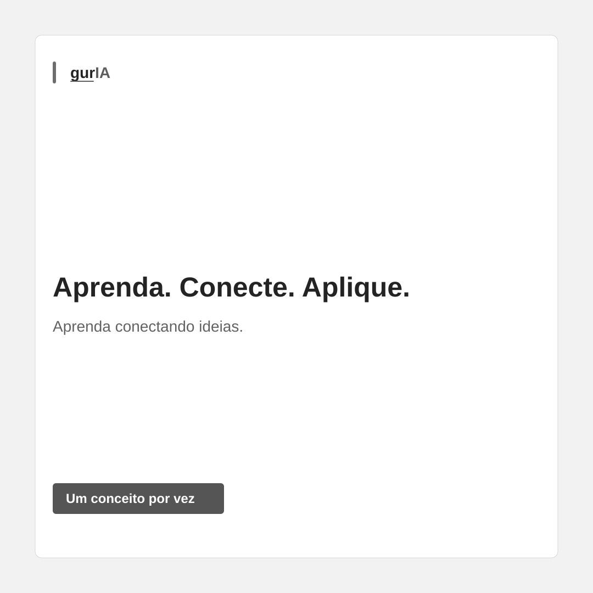

Logo escolhido: 04 — Só a palavra. Baixar SVG · Versão para fundo escuro


gur é o nome. gurIA combina inteligência artificial com a brincadeira de “guria”, no Sul.
Clara, curiosa e acolhedora. Evitar ornamentação que dispute atenção com o estudo.
Primer fornece os tokens oficiais; a identidade OpenMAIC dá contexto ao produto. Guia local, sem fontes ou serviços externos.
Paleta e contraste
#ffffff#f2f2f2#232323#626262#6d6d6d#555555#d8d8d8#6c6c6cTexto normal: pelo menos 4,5:1. Bordas e superfícies não são cores de texto.
Tipografia
Título da página · 32px
Título de seção · 24px
Título de cartão · 20px
Leitura · 16px / 1,5
Interface · 14px / 1,5
Metadados · 12px
Ações e estados
Seu próximo passo
Um cartão agrupa uma tarefa e seu contexto.
Peças da mesma marca
Post 1080 × 1080

Thumbnail 1280 × 720
Regras de uso
- Uma ação principal por grupo.
- Preto e cinza para marca, links e ações, com contraste e foco visível.
- Textos secundários usam o token muted, com contraste verificado.
- Controles usam raio de 6px; diálogos, 12px.
- Motion discreto e desativado quando o sistema pedir movimento reduzido.
Exportar tokens para site e vídeo (JSON) · Documentação oficial do Primer
Fontes de sistema. Motion: 150 / 250 / 450ms; cubic-bezier(0.22, 1, 0.36, 1). Licenças MIT preservadas no projeto. A marca gurIA e as quatro direções estão documentadas em layouts.html; este guia apresenta a base Órbita.